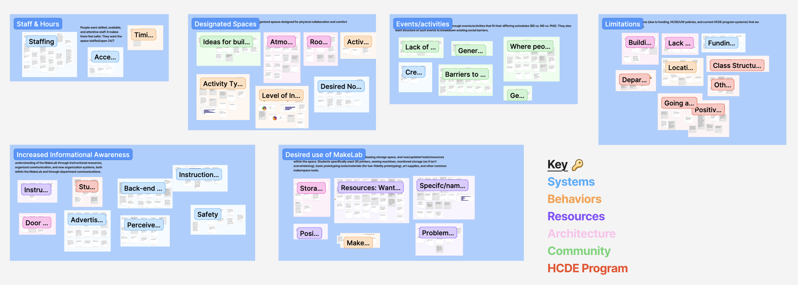
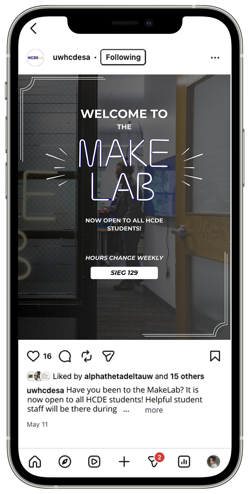
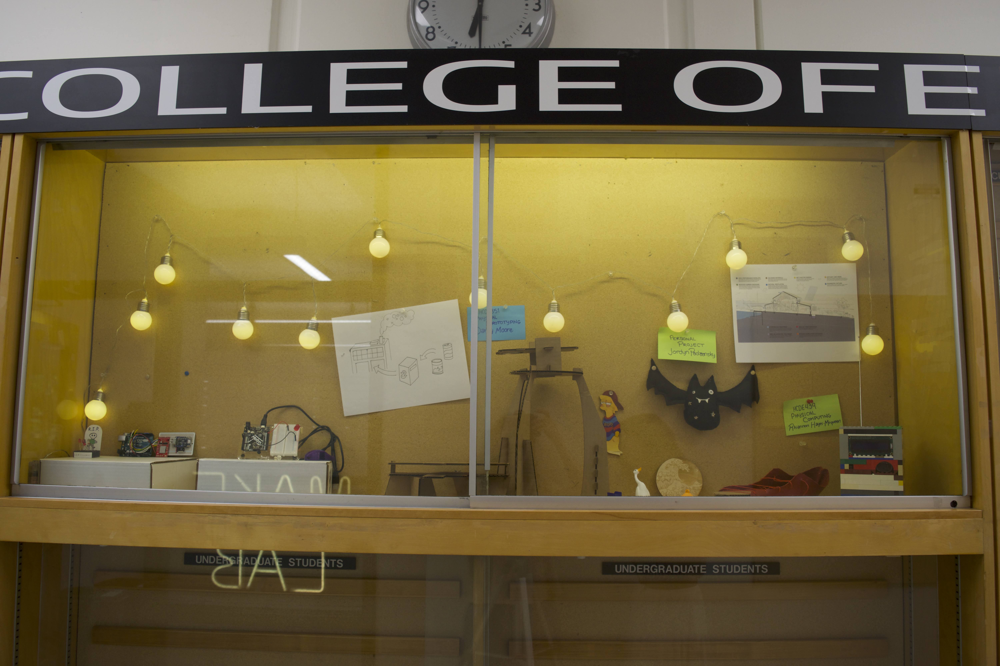
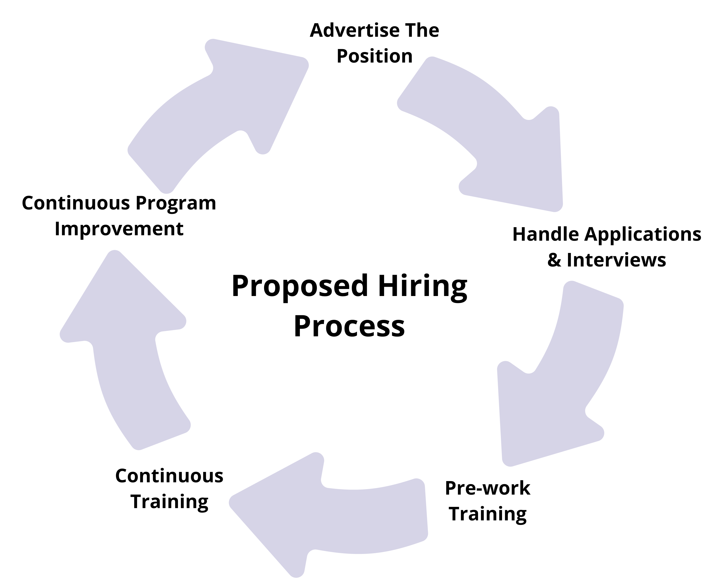
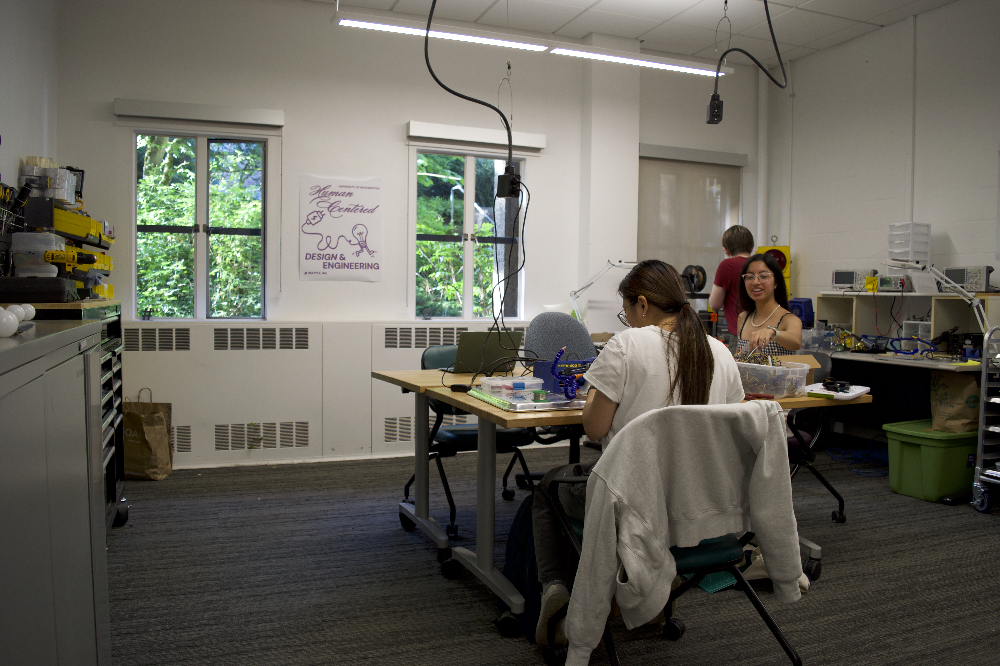
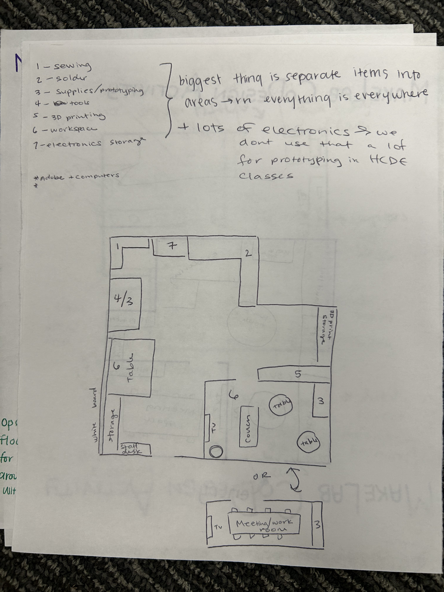

🏆 2026 CAPSTONE AWARD: CREATIVITY 🏆
Helping makers feel like they belong.
MakeLab Makeover
The Problem
The Problem
The HCDE MakeLab in Sieg Hall has tools, tables, and department funding, but most students never walk in. Over 80% of survey respondents had never used it. Those who did often treated it as class storage, not a place to make, learn, or connect.
For our capstone, sponsored by HCDE, we asked: How might we redesign the Sieg MakeLab to better support HCDE students by representing their values and needs?
North star: The MakeLab will provide an opportunity for HCDE students to rediscover Sieg Building as the home of HCDE, where various resources, events, and community spaces exist that promote a sense of belonging and inclusive representation within engineering education.
The Research
The Research
Two site visits, a 31-response survey, eleven interviews, and affinity mapping with students and faculty across HCDE.
-
Existing limitations
Limited funding/resources, strict UW policies, and HCDE program systems that cannot be changed.
"I know the MakeLab and CELT Space are really kind of isolated on the first floor. And, you know, I wish they weren't so isolated." — Faculty interview
-
Need for informational access and awareness
Students have minimal awareness and knowledge of the MakeLab. 80.6% of survey respondents had never used the MakeLab.
-
Desired use of the MakeLab
Users would like aesthetically pleasing storage, and new tools/resources. The MakeLab currently is used for class storage only.
-
Desire for connection through events and activities
Students want organized events and activities to connect with their peers. They also felt intimidated at HCDE events.
"Sometimes with, like, those types of events [tea time], a lot of people are, like, either awkward or just talking with their friends." — Student interview
-
Need for available trained staff
Students need available staff to be present (at diverse hours), attentive, encouraging, and skilled. They want to feel safe.
"Well, I would hope for them not to be like the staff at the MILL, who truly don't care to help you." — Student interview
-
Desire for collaborative and comforting installations
Students want a space that is designed for physical collaboration and has cool features, especially those made by students. People specifically mentioned putting up old student projects.

Four Interventions
Four Interventions
We didn't redesign the room itself because of funding and building constraints. Instead, we prototyped four interventions HCDE could implement: make the MakeLab discoverable, celebrate student work, hire equitably, and make the space feel like home.
Advertising campaign
Guidelines for reaching students where they already are:Slack, Instagram, physical flyers, etc. A clearer web presence explaining what the MakeLab is, when it's open, and what you can do there.

Trophy case displays
A plan to use the empty trophy cases in Sieg's first-floor hall for rotating student project displays to help create a sense of belonging and inspire creativity.

Equitable hiring & training guide
Hiring criteria that prioritize passion for teaching, a learning mindset, and justice-driven thinking over prior makerspace experience to ensure staff reflect and welcome the students who use the space.

Aesthetic improvements
Tool organization by category with consistent signage, student art on the walls, and clearer pathways. These will be small physical changes aimed at comfort, accessibility, and "homeness."

How We Got Here
How We Got Here
We ran a co-design session with five HCDE students, mapped the MakeLab ecosystem, and used five whys to connect behaviors to values like equity, belonging, and agency.
Research & synthesis
Understand the space and the people
Site visits to the HCDE MakeLab and UW Bothell's makerspace. Surveys and interviews with students and faculty. Affinity mapping to find patterns — especially around awareness, staff, and belonging.
Co-design
Design with students, not just for them
Five BS students explored the MakeLab, sketched mock layouts, and mapped where they expect to find resources across Sieg. This helped us ground our proposals in how people actually move through the building.

Mission statements
Turn findings into four actionable missions
Instead of one huge redesign, we aligned each deliverable to a mission: empower learning outside the classroom, celebrate diverse identities, represent students equitably, and cultivate homeness. A service blueprint mapped the ideal student journey through the MakeLab over time.


Two ideas, live status tracking for tool availability and a full materials reorganization, were scoped out due to time. They remain in our final report as recommendations for HCDE.
Capstone Showcase
Capstone Showcase
HCDE Capstone 2026
Creativity Award
Recognized for risk-taking in design, research, ideation, and prototyping at the capstone showcase.
Our final poster and presentation video from the capstone showcase — where we presented MakeLab Makeover to faculty, students, and industry guests.

Reflection
Reflection
What I learned
- Space design is service design. The MakeLab's problem wasn't missing tools, it was missing discovery, representation, and reasons to stay.
- Our team shared a similar background as many BS students, which built trust in interviews. However, that also meant we had to actively seek perspectives we didn't represent (graduate students, international students, non-makers).
- Meaningful work doesn't always result in a product. Our deliverables are guidelines and prototypes meant to persuade HCDE to invest, and the real test is whether they get implemented.
What I'd do next
- Research with MS and PhD students: scheduling conflicts kept them out of co-design, and their relationship to the MakeLab may differ.
- Test interventions after implementation: especially the advertising campaign and trophy case, once HCDE puts them in place.
- Revisit status tracking: students wanted to know when the lab is open, staffed, and not overcrowded before making the trip to Sieg's first floor.
MakeLab reminded me that inclusive design starts with who feels allowed to enter a room, and that the most impactful work isn't always a new interface. Sometimes it's a trophy case, a hiring guide, and a flyer that tells you the door is open.
HCDE Capstone 2026 · Team: Rhiannon Hayes-McQueen, Jordyn Padzensky, Darby Moore · Sponsor: Tyler Fox